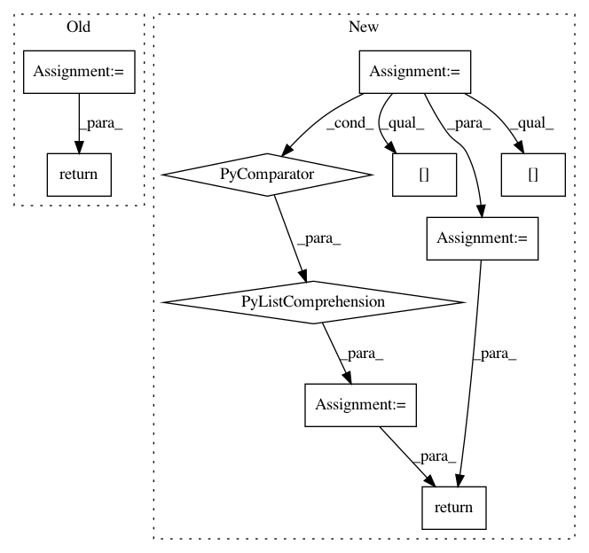

0110937ab04f4298f98963bed1de08962d776b24,src/fonduer/utils/data_model_utils/structural.py,,lowest_common_ancestor_depth,#,187
Before Change
:param c: The binary-Mention Candidate to evaluate
span1 = _to_span(c[0])
span2 = _to_span(c[1])
ancestor1 = np.array(span1.sentence.xpath.split("/"))
ancestor2 = np.array(span2.sentence.xpath.split("/"))
min_len = min(ancestor1.size, ancestor2.size)
return min_len - np.argmin(ancestor1[:min_len] == ancestor2[:min_len])
After Change
:param c: The multinary-Mention Candidate to evaluate
spans = [_to_span(i) for i in c]
ancestors = [np.array(span.sentence.xpath.split("/")) for span in spans]
min_len = min([a.size for a in ancestors])
arrays = np.array([a[:min_len] for a in ancestors])
arg_min = np.argmin(arrays[:-1] == arrays[1:], axis=1)
val = np.min(arg_min[np.nonzero(arg_min)])
return min_len - val
In pattern: SUPERPATTERN
Frequency: 3
Non-data size: 10
Instances
Project Name: HazyResearch/fonduer
Commit Name: 0110937ab04f4298f98963bed1de08962d776b24
Time: 2020-07-01
Author: wajdikhattel@think-it.io
File Name: src/fonduer/utils/data_model_utils/structural.py
Class Name:
Method Name: lowest_common_ancestor_depth
Project Name: librosa/librosa
Commit Name: 2bae518e899657e536572fa59df6e1587795e397
Time: 2014-12-30
Author: brian.mcfee@nyu.edu
File Name: librosa/feature.py
Class Name:
Method Name: line_features
Project Name: WheatonCS/Lexos
Commit Name: f37d256744a38e36426767ce4460fb52db261b65
Time: 2016-05-31
Author: 13501393281@163.com
File Name: processors/analyze/similarity.py
Class Name:
Method Name: similarityMaker